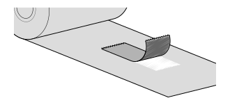

リボンをセットする（熱転写方式で印字する場合）
熱転写方式で印字する場合は、リボンをセットする必要があります。ここでは、リボンのセット方法および交換方法を説明します。

- リボンの巻き方向は、リボンの内側に粘着テープを貼り付けて確認できます。テープをはがしてインクが付着した場合は、インクが内側に塗布されています（裏巻き）。
インク面が外側（表巻きリボン）の場合
インク面が内側（裏巻きリボン）の場合

本製品は、表巻き/裏巻き両方に対応しています。詳細は、リボンを参照してください。
- リボン巻取り軸が奥まで押し込まれていることを確認します。

- インク面が用紙と接するように、リボンをリボン供給軸に奥までセットします。
- リボンをサーマルヘッドの下に通します。
リボンは、用紙センサガイドの上を通してください。
図は裏巻きリボン - リボン巻取り軸に対して左回りにリボンを巻き付けます。
グリップシートにリボンをかぶせ、軸を左回りに数回回して巻き付けます。

- リボンの経路は以下のようになります。
裏巻きリボン
表巻きリボン
- リボンの経路は以下のようになります。
- 用紙がすでにセットされている場合は、「カチッ」と音がするまで、サーマルヘッドを押し下げます。
用紙がセットされていない場合は、用紙をセットしてください。 - トップカバーを閉じます。

- トップカバーを閉じるときは、指を挟まないように注意してください。
リボンを交換するには
- リボン巻取り軸の先端にあるボタンを押して、リボン巻取り軸を引き出します。

- 使用済みのリボンを、リボン巻取り軸から引き抜きます。

- リボン巻取り軸を奥まで押し込みます。

- リボン供給軸から使用済みのリボン支管を取り外します。